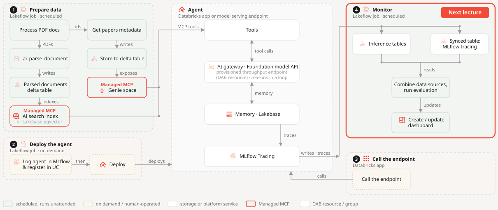
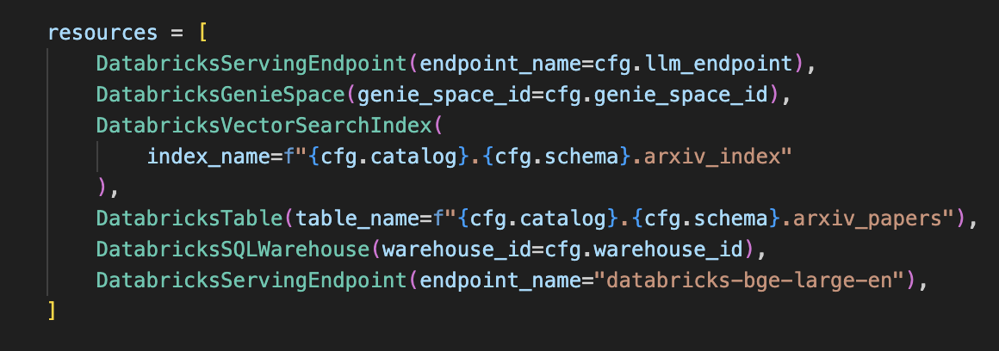
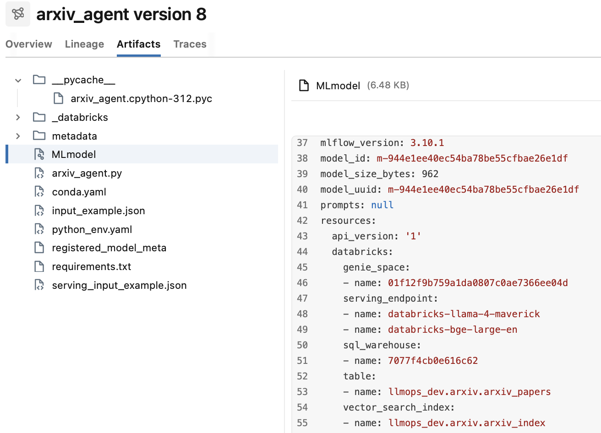
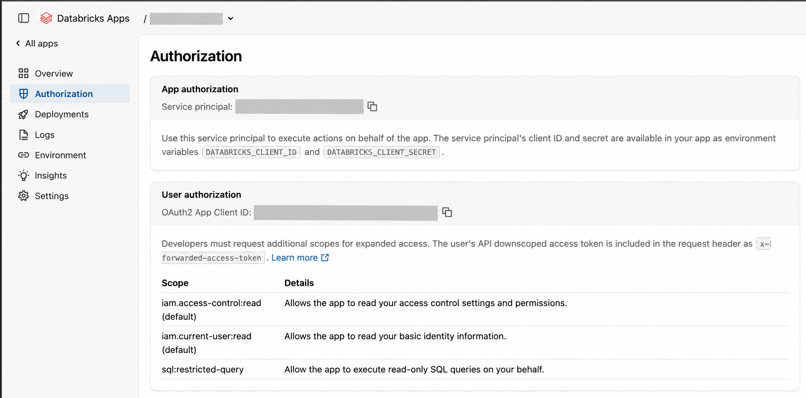
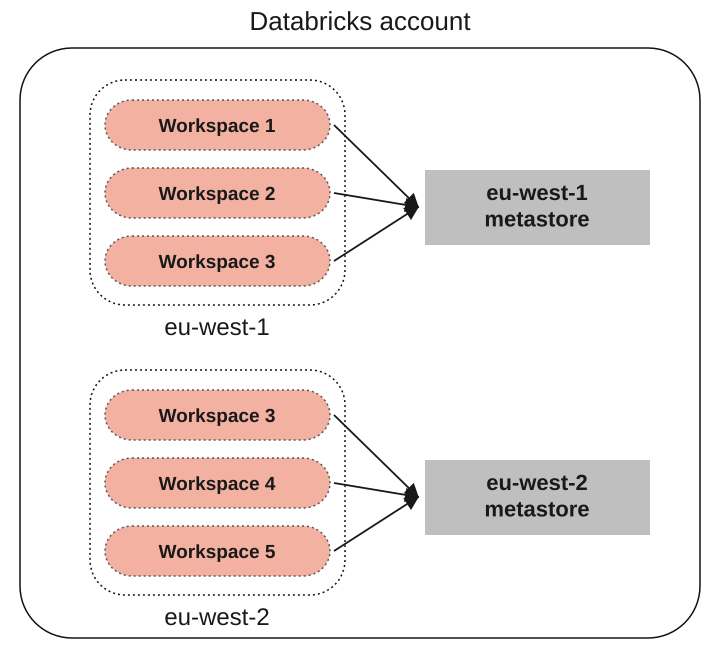
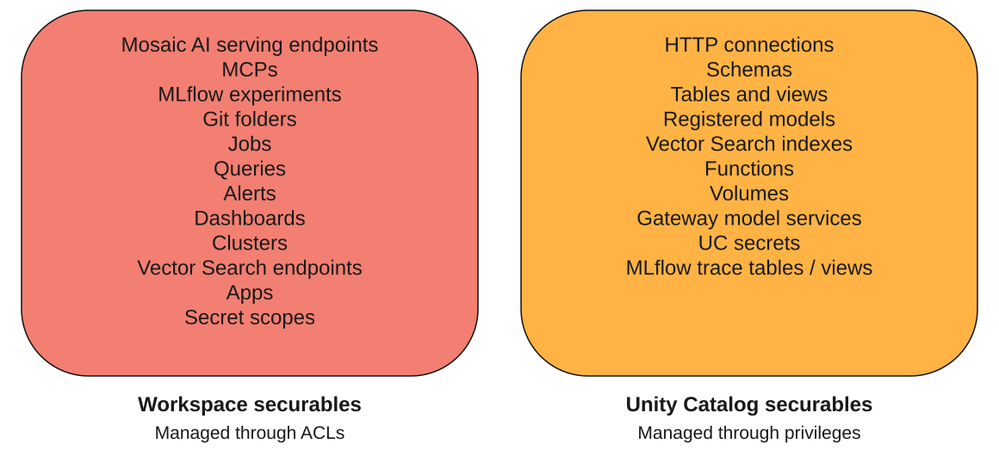
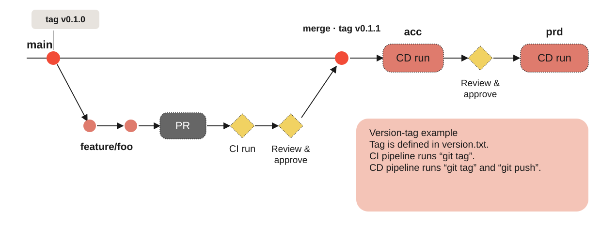

LECTURE 5
Deploying AI agents
on Databricks
Deployment, authentication
and CI/CD
LLMOps with Databricks

LECTURE 5
Deployment, authentication
and CI/CD
LLMOps with Databricks
What we will cover today

| DIMENSION | DATABRICKS APPS | MODEL SERVING |
|---|---|---|
| Agent packaging | Deploy code directly — no MLflow log/register step required | Log model → register → deploy |
| Deployment complexity | Bundle defines App resource; bundle run deploys the code | Model logging, dependencies and endpoint configuration |
| Model versioning | Code versioning in Git; no registered model version required | MLflow model versions and lineage in Unity Catalog |
| Rollback | Redeploy a previous source revision | Serve a previous registered model version |
| Pre-deployment evaluation | Gate before bundle run publishes the App | Gate before updating the served model version |
| DIMENSION | DATABRICKS APPS | MODEL SERVING |
|---|---|---|
| Python environment | pyproject.toml + uv.lock | Captured at model logging / environment packing |
| Python version flexibility | Select a compatible interpreter; downloads require network access | Captured at logging; use a supported serving environment |
| Runtime context | App process, outside a notebook; explicit configuration required | Serving process, outside a notebook; explicit configuration required |
| Memory | 6 GB Medium · 12 GB Large 48 GB XLarge in supported regions | CPU: 4 GB per concurrency CPU_MEDIUM: 8 GB · CPU_LARGE: 16 GB |
| Scaling | Horizontal scaling; no automatic scale-to-zero. Can stop explicitly through the SDK | Autoscaling; scale-to-zero where supported |
| On-behalf-of-user auth | Yes With user authorization configured | Yes With a supported agent auth path |
| Resource | Access | Where granted |
|---|---|---|
| MLflow traces in UC | SELECT + MODIFY on tables | Platform setup Demonstrated in notebook 4.0 |
| Genie space | CAN_RUN | Genie bundle resource |
| Lakebase | CAN_USE on project Postgres OAuth role for the SPN; CONNECT; schema USAGE + CREATE; SELECT for retrieval; SELECT + INSERT for memory | Platform setup CAN_MANAGE for project grants; databricks_superuser for Postgres grants |
| SQL warehouse | CAN_USE | Platform setup |
| Embedding endpoint | CAN_QUERY | Platform setup |
| UC Gateway chat model | EXECUTE + parent USE | Platform setup |
| Existing SPN · pros | Existing SPN · cons |
|---|---|
| Platform-controlled access. Users do not need management rights on every resource. An Azure SPN can also have Azure resource permissions. | Calls use that SPN’s permissions. This does not implement on-behalf-of-user access. |
Our choice today: existing SPN with a Databricks App


Without on_behalf_of_user: access is based on the creator/deployer’s permissions.

on_behalf_of_user=True → use the caller’s permissions for this resource.

Illustrative logged-model metadata from the source deck.

Databricks · Building permission-aware Apps · October 2026
Assets use a three-part name:
catalog.schema.asset
Catalogs contain schemas.
Schemas contain assets.
Also include UC Gateway services,
MLflow trace tables and UC secrets.


Account administrators manage workspaces, UC metastores and account settings.


Also in UC: Gateway model services, secrets, and MLflow trace tables and views.

UC trace ingestion requires explicit SELECT + MODIFY; grant READ SECRET for secret values.

Protect main with required checks. Configure required reviewers on the GitHub prd environment.
bundle:
name: course-code-hub
engine: direct
databricks_cli_version: ">=1.23.0"
# CI pins CLI 1.24.0.
# Release inputs include git_sha and schedule_pause_status.artifacts:
default:
type: whl
build: uv build --native-tls
| Include | Exclude |
|---|---|
| src/ and entry points | Caches and build scratch files |
| project_config.yml and prompts | Local credentials |
| uv.lock and pyproject.toml | Unneeded development artifacts |
Check ignore rules, sync configuration and relative paths.
# Reusable workflow job:
environment: ${{ inputs.target }}
# Caller passes acc, then prd.
databricks bundle deploy --target "${{ inputs.target }}"
databricks bundle run evaluate_deploy_app \
--target "${{ inputs.target }}"OIDC uses each environment’s host and deployment SPN ID.
| Command | Purpose |
|---|---|
| validate / plan | Inspect configuration and changes |
| deploy | Apply resource definitions and upload files |
| run | Execute a job or deploy an App |
| summary / sync | Inspect deployed resources / synchronize source |
| destroy | Remove managed resources with care |
Current limitation: notebook CLI execution failed in the tested serverless job.
Use personal learning resources. No company credentials.
What changes when the caller’s data permissions must apply?
What proves that the version you tested is the version you released?